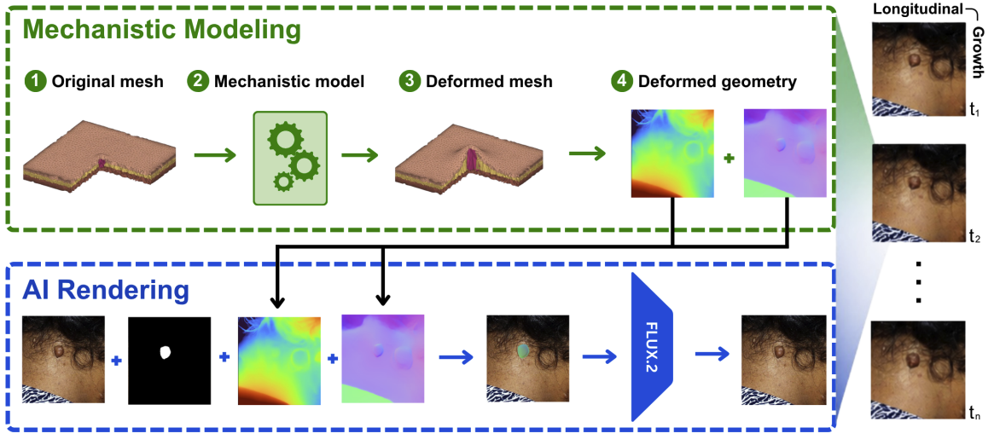
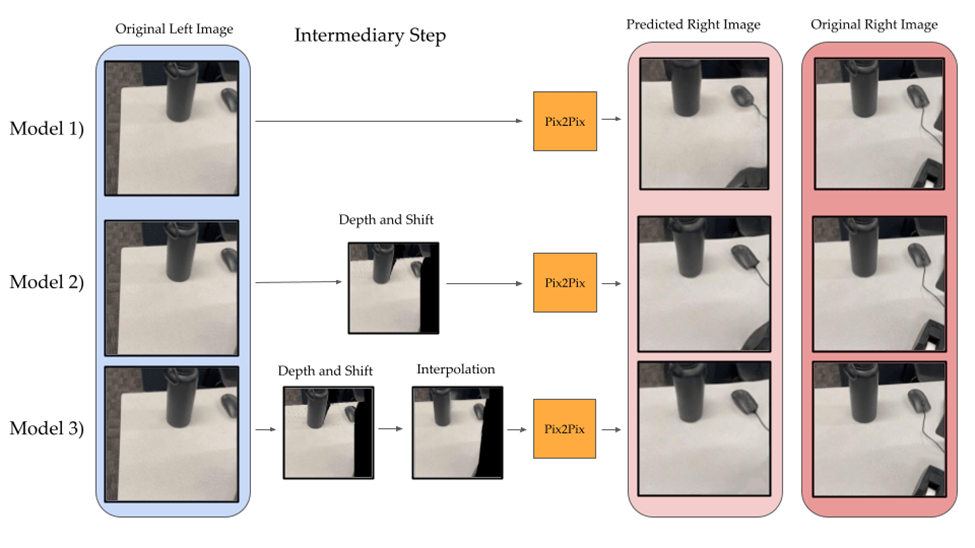
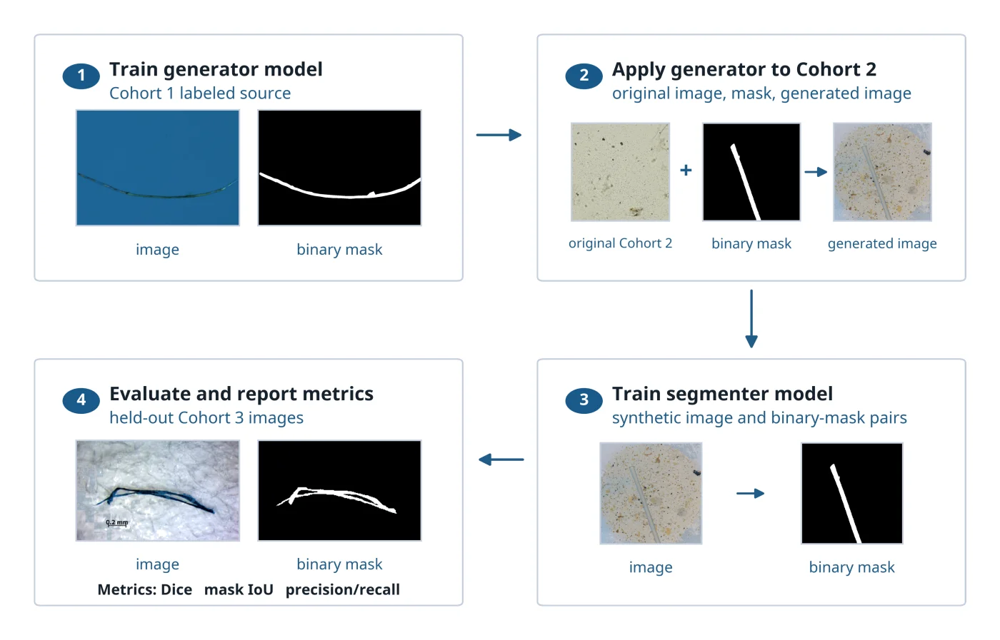
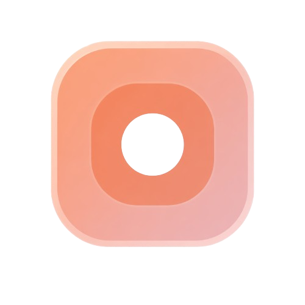
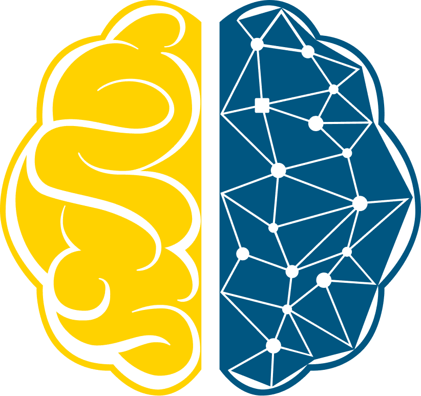
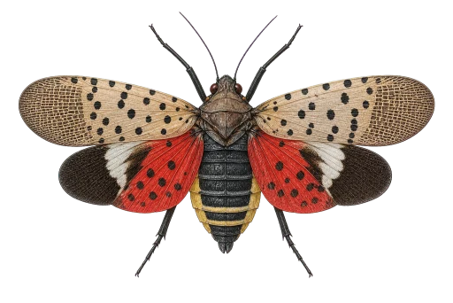
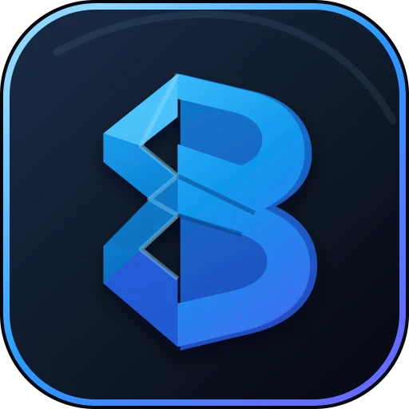

Synthesizing Longitudinal Cutaneous Neurofibroma Imaging for Digital-Twin Burden Quantification
The 1st MICCAI Workshop on Medical World Models, 2026
I am currently a Computer Science undergraduate at UC Berkeley and a researcher with Stanford Medicine’s Gevaert Lab. My work focuses on computer vision, medical imaging, and machine-learning systems.
My current research interests lie in robust visual learning, synthetic data, and biomedical AI. I also build scientific and creative software, including research workspaces, agent tools, forecasting interfaces, and tools for DJs. I am currently building Infrastruct.

The 1st MICCAI Workshop on Medical World Models, 2026

National High School Journal of Science, 2025






A physics-based approach to track and predict the invasion of the spotted lanternfly across the U.S. East Coast.

A memory layer for DJ sets that connects recordings to Rekordbox history, timed tracks, live lyrics, photos, and places.